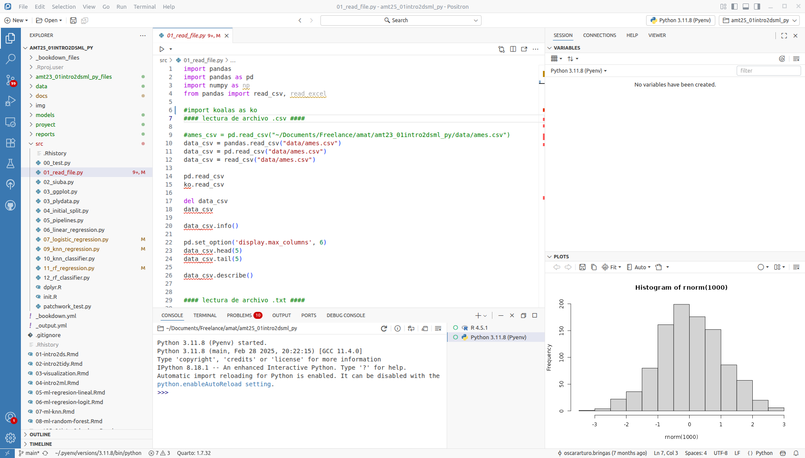
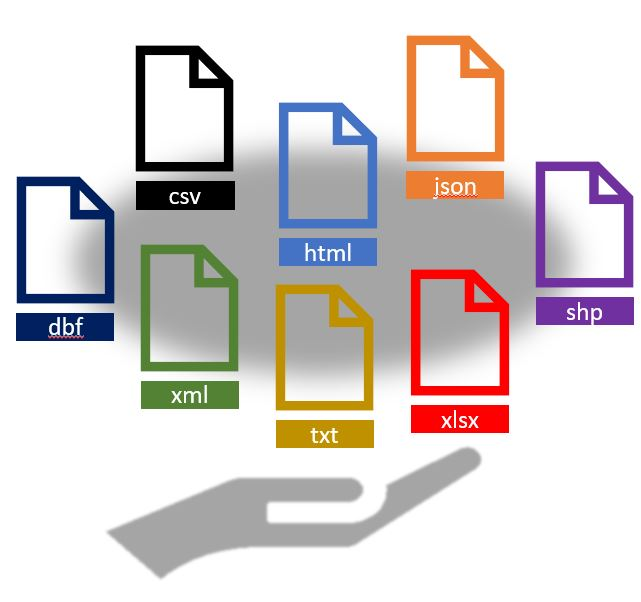

Capítulo 2 Introducción a R
R (R Core Team) es un entorno y lenguaje de programación que permite el análisis estadístico de información y reportes gráficos. Es ampliamente usado en investigación por la comunidad estadística en campos como la biomedicina, minería de datos, matemáticas financieras, entre otros. Ha ganado mucha popularidad en los últimos años al ser un software libre que está en constante crecimiento por las aportaciones de otros usuarios y que permite la interacción con software estadísticos como STATA, SAS, SPSS, etc.. R permite la incorporación de librerías y paqueterías con funcionalidades específicas, por lo que es un lenguaje de programación muy completo y fácil de usar.
2.1 ¿Cómo obtener R?
R puede ser fácilmente descargado de forma gratuita desde el sitio oficial http://www.r-project.org/. R está disponible para las plataformas Windows, Mac y Linux.
2.2 ¿Qué es Positron?
Positron es un Entorno de Desarrollo Integrado (IDE, por sus siglas en inglés) creado por Posit (antes Rstudio) para R y Python. Este permite y facilita el desarrollo y ejecución de sintaxis para código en R y python, incluye una consola y proporciona herramientas para la gestión del espacio de trabajo. Positron está disponible para Windows, Mac y Linux.
Algunas de las principales características de Positron que lo hacen una gran herramienta para trabajar, son:
- Auto completado de código
- Sangría inteligente
- Resaltado de sintaxis
- Facilidad para definir funciones
- Soporte integrado
- Documentación integrada
- Administración de directorios y proyectos
- Visor de datos
- Depurador interactivo para corregir errores
- Conección con Rmarkwon y Sweave
La siguiente imagen muestra la forma en la que está estructurado Positron. El orden de los páneles puede ser elegido por el usuario, así como las características de tipo de letra, tamaño y color de fondo, entre otras características.

Figure 2.1: Páneles de trabajo de Positron
2.3 Lectura de datos
El primer paso para analizar datos es incorporarlos a la sesión de R para que puedan ser manipulados y observados. Existen múltiples librerías y funciones en R que permiten leer la información proveniente de un archivo externo, el cual puede tener una de muchas posibles extensiones.
Usualmente, no creamos los datos desde la sesión de R, sino que a través de un archivo externo se realiza la lectura de datos escritos en un archivo. Los más comúnes son:

La paquetería readr fue desarrollada recientemente para lidiar con la lectura de archivos grandes rápidamente. Esta paquetería proporciona funciones que suelen ser mucho más rápidas que las funciones base que proporciona R.
Ventajas de readr:
Por lo general, son mucho más rápidos (~ 10x) que sus funciones equivalentes.
Producen tibbles:
- No convierten vectores de caracteres en factores.
- No usan nombres de filas ni modifican los nombres de columnas.
Reproducibilidad
2.3.1 Archivos csv
A la hora de importar conjuntos de datos en R, uno de los formatos más habituales en los que hallamos información es en archivos separados por comas (comma separated values), cuya extensión suele ser .csv. En ellos encontramos múltiples líneas que recogen la tabla de interés, y en las cuales los valores aparecen, de manera consecutiva, separados por el carácter ,.
Para importar este tipo de archivos en nuestra sesión de R, se utiliza la función read_csv(). Para acceder a su documentación utilizamos el comando ?read_csv.
El único argumento que debemos de pasar a esta función de manera obligatoria, es file, el nombre o la ruta completa del archivo que pretendemos importar.
library(readr)
read_csv(
file,
col_names = TRUE,
col_types = NULL,
locale = default_locale(),
na = c("", "NA"),
quoted_na = TRUE,
quote = "\"",
comment = "")La paquetería readr fue desarrollada recientemente para lidiar con la lectura de archivos grandes rápidamente. El paquete proporciona reemplazos para funciones como read.table(), read.csv() entre otras. Esta paquetería proporciona funciones que suelen ser mucho más rápidas que las funciones base que proporciona R.
Ventajas de readr:
Por lo general, son mucho más rápidos (~ 10x) que sus funciones equivalentes.
Producen tibbles:
- No convierten vectores de caracteres en factores.
- No usan nombres de filas ni modifican los nombres de columnas.
Reproducibilidad
No convierte, automáticamente, las columnas con cadenas de caracteres a factores, como sí hacen por defecto las otras funciones base de R.
Reconoce ocho clases diferentes de datos (enteros, lógicos, etc.), dejando el resto como cadenas de caracteres.
Veamos un ejemplo:
La base de datos llamada AmesHousing contiene un conjunto de datos con información de la Oficina del Tasador de Ames utilizada para calcular los valores tasados para las propiedades residenciales individuales vendidas en Ames, Iowa, de 2006 a 2010. FUENTES: Ames, Oficina del Tasador de Iowa.
Pueden descargar los datos para la clase aquí
## MS_SubClass MS_Zoning Lot_Frontage
## 1 One_Story_1946_and_Newer_All_Styles Residential_Low_Density 141
## 2 One_Story_1946_and_Newer_All_Styles Residential_High_Density 80
## Lot_Area Street Alley Lot_Shape Land_Contour Utilities
## 1 31770 Pave No_Alley_Access Slightly_Irregular Lvl AllPub
## 2 11622 Pave No_Alley_Access Regular Lvl AllPub
## Lot_Config Land_Slope Neighborhood Condition_1 Condition_2 Bldg_Type
## 1 Corner Gtl North_Ames Norm Norm OneFam
## 2 Inside Gtl North_Ames Feedr Norm OneFam
## House_Style Overall_Cond Year_Built Year_Remod_Add Roof_Style Roof_Matl
## 1 One_Story Average 1960 1960 Hip CompShg
## 2 One_Story Above_Average 1961 1961 Gable CompShg
## Exterior_1st Exterior_2nd Mas_Vnr_Type Mas_Vnr_Area Exter_Cond Foundation
## 1 BrkFace Plywood Stone 112 Typical CBlock
## 2 VinylSd VinylSd None 0 Typical CBlock
## Bsmt_Cond Bsmt_Exposure BsmtFin_Type_1 BsmtFin_SF_1 BsmtFin_Type_2
## 1 Good Gd BLQ 2 Unf
## 2 Typical No Rec 6 LwQ
## BsmtFin_SF_2 Bsmt_Unf_SF Total_Bsmt_SF Heating Heating_QC Central_Air
## 1 0 441 1080 GasA Fair Y
## 2 144 270 882 GasA Typical Y
## Electrical First_Flr_SF Second_Flr_SF Gr_Liv_Area Bsmt_Full_Bath
## 1 SBrkr 1656 0 1656 1
## 2 SBrkr 896 0 896 0
## Bsmt_Half_Bath Full_Bath Half_Bath Bedroom_AbvGr Kitchen_AbvGr TotRms_AbvGrd
## 1 0 1 0 3 1 7
## 2 0 1 0 2 1 5
## Functional Fireplaces Garage_Type Garage_Finish Garage_Cars Garage_Area
## 1 Typ 2 Attchd Fin 2 528
## 2 Typ 0 Attchd Unf 1 730
## Garage_Cond Paved_Drive Wood_Deck_SF Open_Porch_SF Enclosed_Porch
## 1 Typical Partial_Pavement 210 62 0
## 2 Typical Paved 140 0 0
## Three_season_porch Screen_Porch Pool_Area Pool_QC Fence
## 1 0 0 0 No_Pool No_Fence
## 2 0 120 0 No_Pool Minimum_Privacy
## Misc_Feature Misc_Val Mo_Sold Year_Sold Sale_Type Sale_Condition Sale_Price
## 1 None 0 5 2010 WD Normal 215000
## 2 None 0 6 2010 WD Normal 105000
## Longitude Latitude
## 1 -93.61975 42.05403
## 2 -93.61976 42.05301## # A tibble: 2 × 74
## MS_SubClass MS_Zoning Lot_Frontage Lot_Area Street Alley Lot_Shape
## <chr> <chr> <dbl> <dbl> <chr> <chr> <chr>
## 1 One_Story_1946_and_New… Resident… 141 31770 Pave No_A… Slightly…
## 2 One_Story_1946_and_New… Resident… 80 11622 Pave No_A… Regular
## # ℹ 67 more variables: Land_Contour <chr>, Utilities <chr>, Lot_Config <chr>,
## # Land_Slope <chr>, Neighborhood <chr>, Condition_1 <chr>, Condition_2 <chr>,
## # Bldg_Type <chr>, House_Style <chr>, Overall_Cond <chr>, Year_Built <dbl>,
## # Year_Remod_Add <dbl>, Roof_Style <chr>, Roof_Matl <chr>,
## # Exterior_1st <chr>, Exterior_2nd <chr>, Mas_Vnr_Type <chr>,
## # Mas_Vnr_Area <dbl>, Exter_Cond <chr>, Foundation <chr>, Bsmt_Cond <chr>,
## # Bsmt_Exposure <chr>, BsmtFin_Type_1 <chr>, BsmtFin_SF_1 <dbl>, …¿Y si el archivo que necesitamos leer esta en excel?
2.3.2 Archivos txt
Uno de los archivos más comunes es el .txt. La librería readr también cuenta con funciones que permiten leer fácilmente los datos contenidos en formato tabular.
## # A tibble: 2 × 74
## MS_SubClass MS_Zoning Lot_Frontage Lot_Area Street Alley Lot_Shape
## <chr> <chr> <dbl> <dbl> <chr> <chr> <chr>
## 1 One_Story_1946_and_New… Resident… 141 31770 Pave No_A… Slightly…
## 2 One_Story_1946_and_New… Resident… 80 11622 Pave No_A… Regular
## # ℹ 67 more variables: Land_Contour <chr>, Utilities <chr>, Lot_Config <chr>,
## # Land_Slope <chr>, Neighborhood <chr>, Condition_1 <chr>, Condition_2 <chr>,
## # Bldg_Type <chr>, House_Style <chr>, Overall_Cond <chr>, Year_Built <dbl>,
## # Year_Remod_Add <dbl>, Roof_Style <chr>, Roof_Matl <chr>,
## # Exterior_1st <chr>, Exterior_2nd <chr>, Mas_Vnr_Type <chr>,
## # Mas_Vnr_Area <dbl>, Exter_Cond <chr>, Foundation <chr>, Bsmt_Cond <chr>,
## # Bsmt_Exposure <chr>, BsmtFin_Type_1 <chr>, BsmtFin_SF_1 <dbl>, …La función read_delim() funciona para leer archivos con diferentes delimitadores posibles, es decir, es posible especificar si las columnas están separadas por espacios, comas, punto y coma, tabulador o algún otro delimitador (““,”,“,”;“,”, “@”).
Adicionalmente, se puede especificar si el archivo contiene encabezado, si existen renglones a saltar, codificación, tipo de variable y muchas más opciones. Todos estos detalles pueden consultarse en la documentación de ayuda.
2.3.3 Archivos xls y xlsx
La paquetería readxl facilita la obtención de datos tabulares de archivos de Excel. Admite tanto el formato .xls heredado como el formato .xlsx moderno basado en XML.
Esta paquetería pone a disposición las siguientes funciones:
read_xlsx()lee un archivo con extensión xlsx.
read_xlsx(
path,
sheet = NULL,
range = NULL,
col_names = TRUE,
col_types = NULL,
na = "",
trim_ws = TRUE,
skip = 0,
n_max = Inf,
guess_max = min(1000, n_max),
progress = readxl_progress(),
.name_repair = "unique"
)read_xls()lee un archivo con extensión xls.
read_xls(
path,
sheet = NULL,
range = NULL,
col_names = TRUE,
col_types = NULL,
na = "",
trim_ws = TRUE,
skip = 0,
n_max = Inf,
guess_max = min(1000, n_max),
progress = readxl_progress(),
.name_repair = "unique"
)read_excel()determina si el archivo es de tipo xls o xlsx para después llamar a una de las funciones mencionadas anteriormente.
read_excel(
path,
sheet = NULL,
range = NULL,
col_names = TRUE,
col_types = NULL,
na = "",
trim_ws = TRUE,
skip = 0,
n_max = Inf,
guess_max = min(1000, n_max),
progress = readxl_progress(),
.name_repair = "unique"
)EJERCICIO: Leer archivo excel de la carpeta del curso
2.3.4 Archivos json
Se utiliza la función fromJSON de la paquetería jsonlite
## MS_SubClass MS_Zoning Lot_Frontage
## 1 One_Story_1946_and_Newer_All_Styles Residential_Low_Density 141
## 2 One_Story_1946_and_Newer_All_Styles Residential_High_Density 80
## Lot_Area Street Alley Lot_Shape Land_Contour Utilities
## 1 31770 Pave No_Alley_Access Slightly_Irregular Lvl AllPub
## 2 11622 Pave No_Alley_Access Regular Lvl AllPub
## Lot_Config Land_Slope Neighborhood Condition_1 Condition_2 Bldg_Type
## 1 Corner Gtl North_Ames Norm Norm OneFam
## 2 Inside Gtl North_Ames Feedr Norm OneFam
## House_Style Overall_Cond Year_Built Year_Remod_Add Roof_Style Roof_Matl
## 1 One_Story Average 1960 1960 Hip CompShg
## 2 One_Story Above_Average 1961 1961 Gable CompShg
## Exterior_1st Exterior_2nd Mas_Vnr_Type Mas_Vnr_Area Exter_Cond Foundation
## 1 BrkFace Plywood Stone 112 Typical CBlock
## 2 VinylSd VinylSd None 0 Typical CBlock
## Bsmt_Cond Bsmt_Exposure BsmtFin_Type_1 BsmtFin_SF_1 BsmtFin_Type_2
## 1 Good Gd BLQ 2 Unf
## 2 Typical No Rec 6 LwQ
## BsmtFin_SF_2 Bsmt_Unf_SF Total_Bsmt_SF Heating Heating_QC Central_Air
## 1 0 441 1080 GasA Fair Y
## 2 144 270 882 GasA Typical Y
## Electrical First_Flr_SF Second_Flr_SF Gr_Liv_Area Bsmt_Full_Bath
## 1 SBrkr 1656 0 1656 1
## 2 SBrkr 896 0 896 0
## Bsmt_Half_Bath Full_Bath Half_Bath Bedroom_AbvGr Kitchen_AbvGr TotRms_AbvGrd
## 1 0 1 0 3 1 7
## 2 0 1 0 2 1 5
## Functional Fireplaces Garage_Type Garage_Finish Garage_Cars Garage_Area
## 1 Typ 2 Attchd Fin 2 528
## 2 Typ 0 Attchd Unf 1 730
## Garage_Cond Paved_Drive Wood_Deck_SF Open_Porch_SF Enclosed_Porch
## 1 Typical Partial_Pavement 210 62 0
## 2 Typical Paved 140 0 0
## Three_season_porch Screen_Porch Pool_Area Pool_QC Fence
## 1 0 0 0 No_Pool No_Fence
## 2 0 120 0 No_Pool Minimum_Privacy
## Misc_Feature Misc_Val Mo_Sold Year_Sold Sale_Type Sale_Condition Sale_Price
## 1 None 0 5 2010 WD Normal 215000
## 2 None 0 6 2010 WD Normal 105000
## Longitude Latitude
## 1 -93.6198 42.054
## 2 -93.6198 42.0532.3.5 Archivos rds
Un tipo de archivo que resulta de particular interés, es el .RDS. Este archivo comprime cualquier objeto o resultado que sea usado o producido en R. Uno puede almacenar el objeto de interés de la siguiente manera:
Puede observarse que en el explorador de archivos se encuentra ahora el nuevo archivo con extensión .rds, el cual puede ser posteriormente incorporado a una sesión de R para seguir trabajando con él.
Algunas de las grandes ventajas que tiene almacenar los archivos en formato rds, son las siguientes:
No es necesario volver a ejecutar procesos largos cuando ya se ha logrado realizar una vez.
El tiempo de lectura de la información es considerablemente más rápido.
2.4 Consultas de datos
Ahora que ya se ha estudiado la manera de cargar datos, aprenderemos como manipularlos con dplyr. El paquete dplyr proporciona un conjunto de funciones muy útiles para manipular data-frames y así reducir el número de repeticiones, la probabilidad de cometer errores y el número de caracteres que hay que escribir. Como valor extra, podemos encontrar que la gramática de dplyr es más fácil de entender.
Revisaremos algunas de sus funciones más usadas (verbos), así como el uso de pipes (%>%) para combinarlas.
select()
filter()
arrange()
mutate()
summarise()
join()
group_by()
Primero tenemos que instalar y cargar la paquetería (parte de tidyverse):
Usaremos el dataset AmesHousing que se proporcionó en el capítulo anterior (el alumno puede hacer el ejercicio con datos propios)
## Rows: 2,930
## Columns: 74
## $ MS_SubClass <chr> "One_Story_1946_and_Newer_All_Styles", "One_Story_1…
## $ MS_Zoning <chr> "Residential_Low_Density", "Residential_High_Densit…
## $ Lot_Frontage <dbl> 141, 80, 81, 93, 74, 78, 41, 43, 39, 60, 75, 0, 63,…
## $ Lot_Area <dbl> 31770, 11622, 14267, 11160, 13830, 9978, 4920, 5005…
## $ Street <chr> "Pave", "Pave", "Pave", "Pave", "Pave", "Pave", "Pa…
## $ Alley <chr> "No_Alley_Access", "No_Alley_Access", "No_Alley_Acc…
## $ Lot_Shape <chr> "Slightly_Irregular", "Regular", "Slightly_Irregula…
## $ Land_Contour <chr> "Lvl", "Lvl", "Lvl", "Lvl", "Lvl", "Lvl", "Lvl", "H…
## $ Utilities <chr> "AllPub", "AllPub", "AllPub", "AllPub", "AllPub", "…
## $ Lot_Config <chr> "Corner", "Inside", "Corner", "Corner", "Inside", "…
## $ Land_Slope <chr> "Gtl", "Gtl", "Gtl", "Gtl", "Gtl", "Gtl", "Gtl", "G…
## $ Neighborhood <chr> "North_Ames", "North_Ames", "North_Ames", "North_Am…
## $ Condition_1 <chr> "Norm", "Feedr", "Norm", "Norm", "Norm", "Norm", "N…
## $ Condition_2 <chr> "Norm", "Norm", "Norm", "Norm", "Norm", "Norm", "No…
## $ Bldg_Type <chr> "OneFam", "OneFam", "OneFam", "OneFam", "OneFam", "…
## $ House_Style <chr> "One_Story", "One_Story", "One_Story", "One_Story",…
## $ Overall_Cond <chr> "Average", "Above_Average", "Above_Average", "Avera…
## $ Year_Built <dbl> 1960, 1961, 1958, 1968, 1997, 1998, 2001, 1992, 199…
## $ Year_Remod_Add <dbl> 1960, 1961, 1958, 1968, 1998, 1998, 2001, 1992, 199…
## $ Roof_Style <chr> "Hip", "Gable", "Hip", "Hip", "Gable", "Gable", "Ga…
## $ Roof_Matl <chr> "CompShg", "CompShg", "CompShg", "CompShg", "CompSh…
## $ Exterior_1st <chr> "BrkFace", "VinylSd", "Wd Sdng", "BrkFace", "VinylS…
## $ Exterior_2nd <chr> "Plywood", "VinylSd", "Wd Sdng", "BrkFace", "VinylS…
## $ Mas_Vnr_Type <chr> "Stone", "None", "BrkFace", "None", "None", "BrkFac…
## $ Mas_Vnr_Area <dbl> 112, 0, 108, 0, 0, 20, 0, 0, 0, 0, 0, 0, 0, 0, 0, 6…
## $ Exter_Cond <chr> "Typical", "Typical", "Typical", "Typical", "Typica…
## $ Foundation <chr> "CBlock", "CBlock", "CBlock", "CBlock", "PConc", "P…
## $ Bsmt_Cond <chr> "Good", "Typical", "Typical", "Typical", "Typical",…
## $ Bsmt_Exposure <chr> "Gd", "No", "No", "No", "No", "No", "Mn", "No", "No…
## $ BsmtFin_Type_1 <chr> "BLQ", "Rec", "ALQ", "ALQ", "GLQ", "GLQ", "GLQ", "A…
## $ BsmtFin_SF_1 <dbl> 2, 6, 1, 1, 3, 3, 3, 1, 3, 7, 7, 1, 7, 3, 3, 1, 3, …
## $ BsmtFin_Type_2 <chr> "Unf", "LwQ", "Unf", "Unf", "Unf", "Unf", "Unf", "U…
## $ BsmtFin_SF_2 <dbl> 0, 144, 0, 0, 0, 0, 0, 0, 0, 0, 0, 0, 0, 0, 1120, 0…
## $ Bsmt_Unf_SF <dbl> 441, 270, 406, 1045, 137, 324, 722, 1017, 415, 994,…
## $ Total_Bsmt_SF <dbl> 1080, 882, 1329, 2110, 928, 926, 1338, 1280, 1595, …
## $ Heating <chr> "GasA", "GasA", "GasA", "GasA", "GasA", "GasA", "Ga…
## $ Heating_QC <chr> "Fair", "Typical", "Typical", "Excellent", "Good", …
## $ Central_Air <chr> "Y", "Y", "Y", "Y", "Y", "Y", "Y", "Y", "Y", "Y", "…
## $ Electrical <chr> "SBrkr", "SBrkr", "SBrkr", "SBrkr", "SBrkr", "SBrkr…
## $ First_Flr_SF <dbl> 1656, 896, 1329, 2110, 928, 926, 1338, 1280, 1616, …
## $ Second_Flr_SF <dbl> 0, 0, 0, 0, 701, 678, 0, 0, 0, 776, 892, 0, 676, 0,…
## $ Gr_Liv_Area <dbl> 1656, 896, 1329, 2110, 1629, 1604, 1338, 1280, 1616…
## $ Bsmt_Full_Bath <dbl> 1, 0, 0, 1, 0, 0, 1, 0, 1, 0, 0, 1, 0, 1, 1, 1, 0, …
## $ Bsmt_Half_Bath <dbl> 0, 0, 0, 0, 0, 0, 0, 0, 0, 0, 0, 0, 0, 0, 0, 0, 0, …
## $ Full_Bath <dbl> 1, 1, 1, 2, 2, 2, 2, 2, 2, 2, 2, 2, 2, 1, 1, 3, 2, …
## $ Half_Bath <dbl> 0, 0, 1, 1, 1, 1, 0, 0, 0, 1, 1, 0, 1, 1, 1, 1, 0, …
## $ Bedroom_AbvGr <dbl> 3, 2, 3, 3, 3, 3, 2, 2, 2, 3, 3, 3, 3, 2, 1, 4, 4, …
## $ Kitchen_AbvGr <dbl> 1, 1, 1, 1, 1, 1, 1, 1, 1, 1, 1, 1, 1, 1, 1, 1, 1, …
## $ TotRms_AbvGrd <dbl> 7, 5, 6, 8, 6, 7, 6, 5, 5, 7, 7, 6, 7, 5, 4, 12, 8,…
## $ Functional <chr> "Typ", "Typ", "Typ", "Typ", "Typ", "Typ", "Typ", "T…
## $ Fireplaces <dbl> 2, 0, 0, 2, 1, 1, 0, 0, 1, 1, 1, 0, 1, 1, 0, 1, 0, …
## $ Garage_Type <chr> "Attchd", "Attchd", "Attchd", "Attchd", "Attchd", "…
## $ Garage_Finish <chr> "Fin", "Unf", "Unf", "Fin", "Fin", "Fin", "Fin", "R…
## $ Garage_Cars <dbl> 2, 1, 1, 2, 2, 2, 2, 2, 2, 2, 2, 2, 2, 2, 2, 3, 2, …
## $ Garage_Area <dbl> 528, 730, 312, 522, 482, 470, 582, 506, 608, 442, 4…
## $ Garage_Cond <chr> "Typical", "Typical", "Typical", "Typical", "Typica…
## $ Paved_Drive <chr> "Partial_Pavement", "Paved", "Paved", "Paved", "Pav…
## $ Wood_Deck_SF <dbl> 210, 140, 393, 0, 212, 360, 0, 0, 237, 140, 157, 48…
## $ Open_Porch_SF <dbl> 62, 0, 36, 0, 34, 36, 0, 82, 152, 60, 84, 21, 75, 0…
## $ Enclosed_Porch <dbl> 0, 0, 0, 0, 0, 0, 170, 0, 0, 0, 0, 0, 0, 0, 0, 0, 0…
## $ Three_season_porch <dbl> 0, 0, 0, 0, 0, 0, 0, 0, 0, 0, 0, 0, 0, 0, 0, 0, 0, …
## $ Screen_Porch <dbl> 0, 120, 0, 0, 0, 0, 0, 144, 0, 0, 0, 0, 0, 0, 140, …
## $ Pool_Area <dbl> 0, 0, 0, 0, 0, 0, 0, 0, 0, 0, 0, 0, 0, 0, 0, 0, 0, …
## $ Pool_QC <chr> "No_Pool", "No_Pool", "No_Pool", "No_Pool", "No_Poo…
## $ Fence <chr> "No_Fence", "Minimum_Privacy", "No_Fence", "No_Fenc…
## $ Misc_Feature <chr> "None", "None", "Gar2", "None", "None", "None", "No…
## $ Misc_Val <dbl> 0, 0, 12500, 0, 0, 0, 0, 0, 0, 0, 0, 500, 0, 0, 0, …
## $ Mo_Sold <dbl> 5, 6, 6, 4, 3, 6, 4, 1, 3, 6, 4, 3, 5, 2, 6, 6, 6, …
## $ Year_Sold <dbl> 2010, 2010, 2010, 2010, 2010, 2010, 2010, 2010, 201…
## $ Sale_Type <chr> "WD", "WD", "WD", "WD", "WD", "WD", "WD", "WD", "WD…
## $ Sale_Condition <chr> "Normal", "Normal", "Normal", "Normal", "Normal", "…
## $ Sale_Price <dbl> 215000, 105000, 172000, 244000, 189900, 195500, 213…
## $ Longitude <dbl> -93.61975, -93.61976, -93.61939, -93.61732, -93.638…
## $ Latitude <dbl> 42.05403, 42.05301, 42.05266, 42.05125, 42.06090, 4…2.4.1 Seleccionar columnas
Observamos que nuestros datos tienen 2,930 observaciones y 74 variables, con select() podemos seleccionar las variables que se indiquen.
## # A tibble: 2,930 × 4
## Lot_Area Neighborhood Year_Sold Sale_Price
## <dbl> <chr> <dbl> <dbl>
## 1 31770 North_Ames 2010 215000
## 2 11622 North_Ames 2010 105000
## 3 14267 North_Ames 2010 172000
## 4 11160 North_Ames 2010 244000
## 5 13830 Gilbert 2010 189900
## 6 9978 Gilbert 2010 195500
## 7 4920 Stone_Brook 2010 213500
## 8 5005 Stone_Brook 2010 191500
## 9 5389 Stone_Brook 2010 236500
## 10 7500 Gilbert 2010 189000
## # ℹ 2,920 more rows¡¡ RECORDAR !!
El operador pipe (%>%) se usa para conectar un elemento con una función o acción a realizar. En este caso solo se indica que en los datos de ames se seleccionan 4 variables.
Con select() y contains() podemos seleccionar variables con alguna cadena de texto.
## # A tibble: 2,930 × 5
## Lot_Area Mas_Vnr_Area Gr_Liv_Area Garage_Area Pool_Area
## <dbl> <dbl> <dbl> <dbl> <dbl>
## 1 31770 112 1656 528 0
## 2 11622 0 896 730 0
## 3 14267 108 1329 312 0
## 4 11160 0 2110 522 0
## 5 13830 0 1629 482 0
## 6 9978 20 1604 470 0
## 7 4920 0 1338 582 0
## 8 5005 0 1280 506 0
## 9 5389 0 1616 608 0
## 10 7500 0 1804 442 0
## # ℹ 2,920 more rowsDe igual manera, con select(), ends_with y start_with() podemos seleccionar que inicien o terminen con alguna cadena de texto.
## # A tibble: 2,930 × 5
## Garage_Type Garage_Finish Garage_Cars Garage_Area Garage_Cond
## <chr> <chr> <dbl> <dbl> <chr>
## 1 Attchd Fin 2 528 Typical
## 2 Attchd Unf 1 730 Typical
## 3 Attchd Unf 1 312 Typical
## 4 Attchd Fin 2 522 Typical
## 5 Attchd Fin 2 482 Typical
## 6 Attchd Fin 2 470 Typical
## 7 Attchd Fin 2 582 Typical
## 8 Attchd RFn 2 506 Typical
## 9 Attchd RFn 2 608 Typical
## 10 Attchd Fin 2 442 Typical
## # ℹ 2,920 more rowsFunciones útiles para select():
contains(): Selecciona variables cuyo nombre contiene la cadena de texto.
ends_with(): Selecciona variables cuyo nombre termina con la cadena de caracteres.
everything(): Selecciona todas las columnas.
matches(): Selecciona las variables cuyos nombres coinciden con una expresión regular.
num_range(): Selecciona las variables por posición.
start_with(): Selecciona variables cuyos nombres empiezan con la cadena de caracteres.
any_of: Selecciona cualquiera de estas variables, en caso de existir
EJERCICIO:
- Crear con datos propios una consulta de columnas usando como variable auxiliar cada una de las listadas anteriormente. Será suficiente con realizar un ejemplo de cada una.
2.4.2 Filtrar observaciones
La función filter() nos permite filtrar filas según una condición, primero notemos que la variable Sale_Condition tiene distintas categorías.
##
## Abnorml AdjLand Alloca Family Normal Partial
## 190 12 24 46 2413 245¡¡ SPOILER !!
En un modelo predictivo de Machine Learning, no es correcto agregar columnas cuyo valor es conocido hasta el momento de la observación. Es decir, no deben agregarse variables que no se conozca su valor al momento de la predicción, como es el caso de condición de venta.
Ahora usaremos la función filter para quedarnos solo con las observaciones con condición de venta “normal”.
## # A tibble: 2,413 × 74
## MS_SubClass MS_Zoning Lot_Frontage Lot_Area Street Alley Lot_Shape
## <chr> <chr> <dbl> <dbl> <chr> <chr> <chr>
## 1 One_Story_1946_and_Ne… Resident… 141 31770 Pave No_A… Slightly…
## 2 One_Story_1946_and_Ne… Resident… 80 11622 Pave No_A… Regular
## 3 One_Story_1946_and_Ne… Resident… 81 14267 Pave No_A… Slightly…
## 4 One_Story_1946_and_Ne… Resident… 93 11160 Pave No_A… Regular
## 5 Two_Story_1946_and_Ne… Resident… 74 13830 Pave No_A… Slightly…
## 6 Two_Story_1946_and_Ne… Resident… 78 9978 Pave No_A… Slightly…
## 7 One_Story_PUD_1946_an… Resident… 41 4920 Pave No_A… Regular
## 8 One_Story_PUD_1946_an… Resident… 43 5005 Pave No_A… Slightly…
## 9 One_Story_PUD_1946_an… Resident… 39 5389 Pave No_A… Slightly…
## 10 Two_Story_1946_and_Ne… Resident… 60 7500 Pave No_A… Regular
## # ℹ 2,403 more rows
## # ℹ 67 more variables: Land_Contour <chr>, Utilities <chr>, Lot_Config <chr>,
## # Land_Slope <chr>, Neighborhood <chr>, Condition_1 <chr>, Condition_2 <chr>,
## # Bldg_Type <chr>, House_Style <chr>, Overall_Cond <chr>, Year_Built <dbl>,
## # Year_Remod_Add <dbl>, Roof_Style <chr>, Roof_Matl <chr>,
## # Exterior_1st <chr>, Exterior_2nd <chr>, Mas_Vnr_Type <chr>,
## # Mas_Vnr_Area <dbl>, Exter_Cond <chr>, Foundation <chr>, Bsmt_Cond <chr>, …También se puede usar para filtrar variables numéricas:
## # A tibble: 1,677 × 74
## MS_SubClass MS_Zoning Lot_Frontage Lot_Area Street Alley Lot_Shape
## <chr> <chr> <dbl> <dbl> <chr> <chr> <chr>
## 1 One_Story_1946_and_Ne… Resident… 141 31770 Pave No_A… Slightly…
## 2 One_Story_1946_and_Ne… Resident… 81 14267 Pave No_A… Slightly…
## 3 One_Story_1946_and_Ne… Resident… 93 11160 Pave No_A… Regular
## 4 Two_Story_1946_and_Ne… Resident… 74 13830 Pave No_A… Slightly…
## 5 Two_Story_1946_and_Ne… Resident… 78 9978 Pave No_A… Slightly…
## 6 One_Story_PUD_1946_an… Resident… 41 4920 Pave No_A… Regular
## 7 One_Story_PUD_1946_an… Resident… 43 5005 Pave No_A… Slightly…
## 8 One_Story_PUD_1946_an… Resident… 39 5389 Pave No_A… Slightly…
## 9 Two_Story_1946_and_Ne… Resident… 60 7500 Pave No_A… Regular
## 10 Two_Story_1946_and_Ne… Resident… 75 10000 Pave No_A… Slightly…
## # ℹ 1,667 more rows
## # ℹ 67 more variables: Land_Contour <chr>, Utilities <chr>, Lot_Config <chr>,
## # Land_Slope <chr>, Neighborhood <chr>, Condition_1 <chr>, Condition_2 <chr>,
## # Bldg_Type <chr>, House_Style <chr>, Overall_Cond <chr>, Year_Built <dbl>,
## # Year_Remod_Add <dbl>, Roof_Style <chr>, Roof_Matl <chr>,
## # Exterior_1st <chr>, Exterior_2nd <chr>, Mas_Vnr_Type <chr>,
## # Mas_Vnr_Area <dbl>, Exter_Cond <chr>, Foundation <chr>, Bsmt_Cond <chr>, …Notemos que en el ejemplo anterior se usa &, que ayuda a filtrar por dos condiciones.
También puede usarse | para filtrar por alguna de las dos condiciones.
## # A tibble: 1,271 × 74
## MS_SubClass MS_Zoning Lot_Frontage Lot_Area Street Alley Lot_Shape
## <chr> <chr> <dbl> <dbl> <chr> <chr> <chr>
## 1 One_Story_1946_and_Ne… Resident… 80 11622 Pave No_A… Regular
## 2 One_Story_1946_and_Ne… Resident… 140 19138 Pave No_A… Regular
## 3 One_Story_1946_and_Ne… Resident… 0 11241 Pave No_A… Slightly…
## 4 One_Story_1946_and_Ne… Resident… 0 12537 Pave No_A… Slightly…
## 5 One_Story_1946_and_Ne… Resident… 65 8450 Pave No_A… Regular
## 6 One_Story_1946_and_Ne… Resident… 70 8400 Pave No_A… Regular
## 7 One_Story_1946_and_Ne… Resident… 70 10500 Pave No_A… Regular
## 8 Two_Story_PUD_1946_an… Resident… 21 1680 Pave No_A… Regular
## 9 Two_Story_PUD_1946_an… Resident… 21 1680 Pave No_A… Regular
## 10 Two_Story_PUD_1946_an… Resident… 21 1680 Pave No_A… Regular
## # ℹ 1,261 more rows
## # ℹ 67 more variables: Land_Contour <chr>, Utilities <chr>, Lot_Config <chr>,
## # Land_Slope <chr>, Neighborhood <chr>, Condition_1 <chr>, Condition_2 <chr>,
## # Bldg_Type <chr>, House_Style <chr>, Overall_Cond <chr>, Year_Built <dbl>,
## # Year_Remod_Add <dbl>, Roof_Style <chr>, Roof_Matl <chr>,
## # Exterior_1st <chr>, Exterior_2nd <chr>, Mas_Vnr_Type <chr>,
## # Mas_Vnr_Area <dbl>, Exter_Cond <chr>, Foundation <chr>, Bsmt_Cond <chr>, …Las condiciones pueden ser expresiones lógicas construidas mediante los operadores relacionales y lógicos:
< : Menor que
> : Mayor que
== : Igual que
<= : Menor o igual que
>= : Mayor o igual que
!= : Diferente que
%in% : Pertenece al conjunto
is.na : Es NA
!is.na : No es NA
EJERCICIO:
Practicar la función de filtro de observaciones usando los operadores auxiliares.
Concatenar el resultado de seleccionar columnas y posteriormente filtrar columnas.
2.4.3 Ordenar registros
La función arrange() se utiliza para ordenar las filas de un data frame de acuerdo a una o varias variables. Este ordenamiento puede ser ascendente o descendente.
Por defecto arrange() ordena las filas por orden ascendente:
## # A tibble: 2,930 × 74
## MS_SubClass MS_Zoning Lot_Frontage Lot_Area Street Alley Lot_Shape
## <chr> <chr> <dbl> <dbl> <chr> <chr> <chr>
## 1 One_Story_1945_and_Ol… Resident… 68 9656 Pave No_A… Regular
## 2 One_Story_1946_and_Ne… A_agr 80 14584 Pave No_A… Regular
## 3 One_Story_1945_and_Ol… C_all 60 7879 Pave No_A… Regular
## 4 One_Story_1945_and_Ol… Resident… 60 8088 Pave Grav… Regular
## 5 One_Story_1946_and_Ne… C_all 50 9000 Pave No_A… Regular
## 6 One_and_Half_Story_Fi… Resident… 50 5925 Pave No_A… Regular
## 7 One_Story_1946_and_Ne… Resident… 50 5000 Pave No_A… Regular
## 8 Two_Story_1945_and_Ol… C_all 50 8500 Pave Paved Regular
## 9 One_Story_1945_and_Ol… C_all 72 9392 Pave No_A… Regular
## 10 One_Story_1945_and_Ol… Resident… 50 5925 Pave No_A… Regular
## # ℹ 2,920 more rows
## # ℹ 67 more variables: Land_Contour <chr>, Utilities <chr>, Lot_Config <chr>,
## # Land_Slope <chr>, Neighborhood <chr>, Condition_1 <chr>, Condition_2 <chr>,
## # Bldg_Type <chr>, House_Style <chr>, Overall_Cond <chr>, Year_Built <dbl>,
## # Year_Remod_Add <dbl>, Roof_Style <chr>, Roof_Matl <chr>,
## # Exterior_1st <chr>, Exterior_2nd <chr>, Mas_Vnr_Type <chr>,
## # Mas_Vnr_Area <dbl>, Exter_Cond <chr>, Foundation <chr>, Bsmt_Cond <chr>, …
Si las queremos ordenar de forma ascendente, lo haremos del siguiente modo:
## # A tibble: 2,930 × 74
## MS_SubClass MS_Zoning Lot_Frontage Lot_Area Street Alley Lot_Shape
## <chr> <chr> <dbl> <dbl> <chr> <chr> <chr>
## 1 Two_Story_1946_and_Ne… Resident… 104 21535 Pave No_A… Slightly…
## 2 Two_Story_1946_and_Ne… Resident… 160 15623 Pave No_A… Slightly…
## 3 Two_Story_1946_and_Ne… Resident… 118 35760 Pave No_A… Slightly…
## 4 One_Story_1946_and_Ne… Resident… 106 12720 Pave No_A… Regular
## 5 One_Story_1946_and_Ne… Resident… 100 12919 Pave No_A… Slightly…
## 6 One_Story_1946_and_Ne… Resident… 105 13693 Pave No_A… Regular
## 7 One_Story_1946_and_Ne… Resident… 52 51974 Pave No_A… Slightly…
## 8 Two_Story_1946_and_Ne… Resident… 114 17242 Pave No_A… Slightly…
## 9 Two_Story_1946_and_Ne… Resident… 107 13891 Pave No_A… Regular
## 10 Two_Story_1946_and_Ne… Resident… 85 16056 Pave No_A… Slightly…
## # ℹ 2,920 more rows
## # ℹ 67 more variables: Land_Contour <chr>, Utilities <chr>, Lot_Config <chr>,
## # Land_Slope <chr>, Neighborhood <chr>, Condition_1 <chr>, Condition_2 <chr>,
## # Bldg_Type <chr>, House_Style <chr>, Overall_Cond <chr>, Year_Built <dbl>,
## # Year_Remod_Add <dbl>, Roof_Style <chr>, Roof_Matl <chr>,
## # Exterior_1st <chr>, Exterior_2nd <chr>, Mas_Vnr_Type <chr>,
## # Mas_Vnr_Area <dbl>, Exter_Cond <chr>, Foundation <chr>, Bsmt_Cond <chr>, …Si se desea usar dos o más columnas para realizar el ordenamiento, deben separarse por comas cada una de las características
ames_housing %>%
arrange(Sale_Condition, desc(Sale_Price), Lot_Area) %>%
select(Sale_Condition, Sale_Price, Lot_Area)## # A tibble: 2,930 × 3
## Sale_Condition Sale_Price Lot_Area
## <chr> <dbl> <dbl>
## 1 Abnorml 745000 15623
## 2 Abnorml 552000 14836
## 3 Abnorml 475000 11778
## 4 Abnorml 390000 13418
## 5 Abnorml 328900 5119
## 6 Abnorml 310000 14541
## 7 Abnorml 290000 9950
## 8 Abnorml 287000 15498
## 9 Abnorml 258000 12090
## 10 Abnorml 257000 10994
## # ℹ 2,920 more rowsNotemos que en el ejemplo anterior usamos dos pipes (%>%), como habíamos mencionado se pueden usar los necesarios para combinar funciones.
2.4.4 Agregar / Modificar
Con la función mutate() podemos computar transformaciones de variables en un data frame. A menudo, tendremos la necesidad de crear nuevas variables que se calculan a partir de variables existentes. La función mutate() proporciona una interfaz clara para realizar este tipo de operaciones.
Por ejemplo, haremos el cálculo de la antigüedad del inmueble a partir de las variables Year_Sold y Year_Remod_Add:
ejemplo_mutate <- ames_housing %>%
select(Year_Sold, Year_Remod_Add) %>%
mutate(Antique = Year_Sold - Year_Remod_Add)
ejemplo_mutate## # A tibble: 2,930 × 3
## Year_Sold Year_Remod_Add Antique
## <dbl> <dbl> <dbl>
## 1 2010 1960 50
## 2 2010 1961 49
## 3 2010 1958 52
## 4 2010 1968 42
## 5 2010 1998 12
## 6 2010 1998 12
## 7 2010 2001 9
## 8 2010 1992 18
## 9 2010 1996 14
## 10 2010 1999 11
## # ℹ 2,920 more rowsEl ejemplo anterior crea una nueva variable. Ahora se presenta otro ejemplo en donde se modifica una variable ya creada.
## # A tibble: 2,930 × 3
## Year_Sold Year_Remod_Add Antique
## <dbl> <dbl> <dbl>
## 1 2010 1960 600
## 2 2010 1961 588
## 3 2010 1958 624
## 4 2010 1968 504
## 5 2010 1998 144
## 6 2010 1998 144
## 7 2010 2001 108
## 8 2010 1992 216
## 9 2010 1996 168
## 10 2010 1999 132
## # ℹ 2,920 more rowsEn este segundo ejemplo, se modifica el número de años de antigüedad y se multiplica por un factor de 12 para modificar el tiempo en una escala de meses.
2.4.5 Resumen estadístico
La función summarise() se comporta de forma análoga a la función mutate(), excepto que en lugar de añadir nuevas columnas crea un nuevo data frame.
Podemos usar el ejemplo anterior y calcular la media de la variable creada Antique:
ames_housing %>%
select(Year_Sold, Year_Remod_Add) %>%
mutate(Antique = Year_Sold - Year_Remod_Add) %>%
summarise(Mean_Antique = mean(Antique))## # A tibble: 1 × 1
## Mean_Antique
## <dbl>
## 1 23.5Solo fue necesario agregar un pipe, especificar el nombre de la variable creada y la operación a realizar.
A continuación se muestran funciones que trabajando conjuntamente con la función summarise() facilitarán nuestro trabajo diario. Las primeras pertenecen al paquete base y las otras son del paquete dplyr. Todas ellas toman como argumento un vector y devuelven un único resultado:
min(), max() : Valores max y min.
mean() : Media.
median() : Mediana.
sum() : Suma de los valores.
var(), sd() : Varianza y desviación estándar.
first() : Primer valor en un vector.
last() : El último valor en un vector
n() : El número de valores en un vector.
n_distinct() : El número de valores distintos en un vector.
nth() : Extrae el valor que ocupa la posición n en un vector.
Mas adelante veremos como combinar esta función con la función group_by() para calcular estadísticos agrupados por alguna característica de interés.
EJERCICIO:
- Realizar una consulta usando summarise() y cada una de las funciones estadísticas listadas anteriormente.
2.4.6 Agrupamiento
La función group_by() agrupa un conjunto de filas de acuerdo con los valores de una o más columnas o expresiones.
Usaremos el ejemplo anterior. Primero creamos nuestra nueva variable Antique, después agrupamos por vecindario y al final calculamos la media de la variable Antique. Gracias al agrupamiento, nos regresara una media por cada grupo creado, es decir, nos regresara el promedio de la antigüedad por vecindario.
ames_housing %>%
mutate(Antique = Year_Sold - Year_Remod_Add) %>%
group_by(Neighborhood) %>%
summarise(Mean_Antique = round(mean(Antique), 0))## # A tibble: 28 × 2
## Neighborhood Mean_Antique
## <chr> <dbl>
## 1 Bloomington_Heights 2
## 2 Blueste 25
## 3 Briardale 35
## 4 Brookside 39
## 5 Clear_Creek 28
## 6 College_Creek 8
## 7 Crawford 29
## 8 Edwards 33
## 9 Gilbert 9
## 10 Green_Hills 14
## # ℹ 18 more rows¡¡ RECORDAR !!
En este link se encuentra un buen resumen de las funciones básicas de dplyr